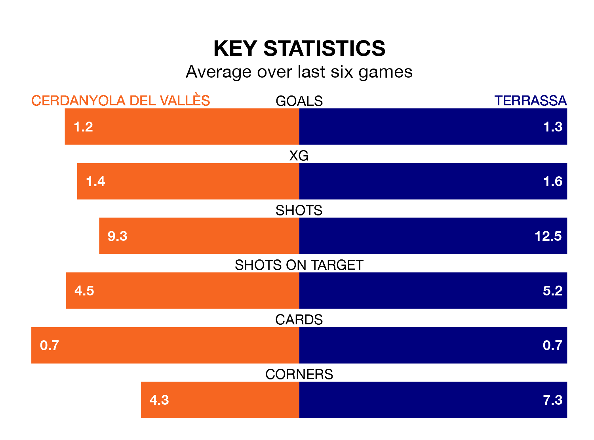

Struggling Cerdanyola del Vallès face Terrassa on Sunday looking to build on a win in their last league outing.
After securing all three points with a 2-0 victory over La Nucía on March 3, Cerdanyola del Vallès sit 15th in the Segunda División RFEF Group 3.
They travel to play a Terrassa side eighth in the standings, who also won their last match, 1-0 against Penya Independent.
In the last 10 years, Cerdanyola del Vallès and Terrassa have played each other on nine occasions. Cerdanyola del Vallès won one of them, Terrassa five, and they drew three times.
On average, Cerdanyola del Vallès scored 0.9 goals and Terrassa 1.6 in those matches.
Their last meeting was on October 28, when they played out a 1-1 draw.
With 29 goals in 25 games so far this season, Cerdanyola del Vallès are scoring at the league's average rate with 1.2 goals per game. And they are conceding more than average, letting in 37 goals at a rate of 1.5 per game.
Terrassa are also average scorers, with 1.2 goals per game. They have also conceded 1.2 goals per game.
The hosts are in disappointing form in the Segunda División RFEF Group 3, with one win and two draws from their last six games.
With three wins and a draw over that period, the away side's form is better – they have taken 10 points from 18, compared to Cerdanyola del Vallès's five.
Updated: 09:34 (UTC), 08/03/24